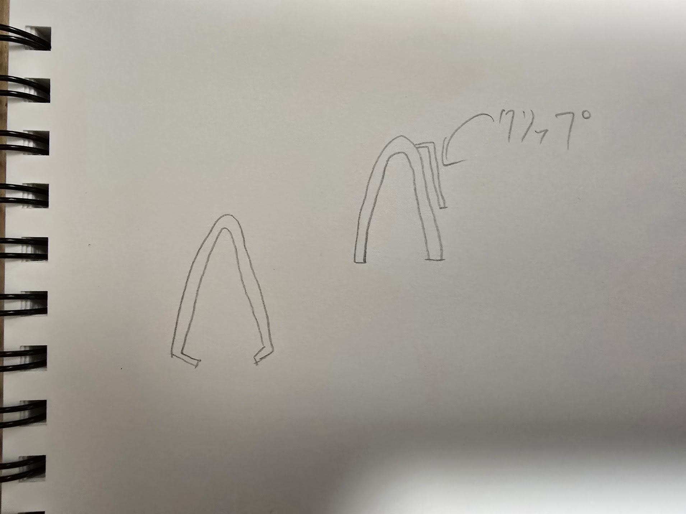
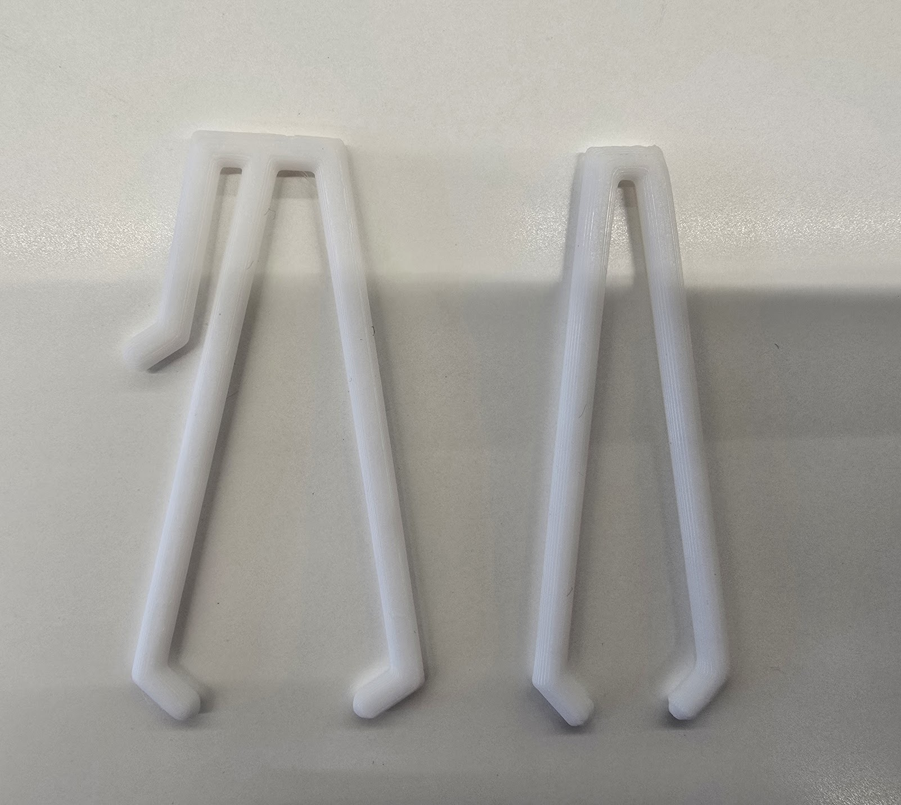
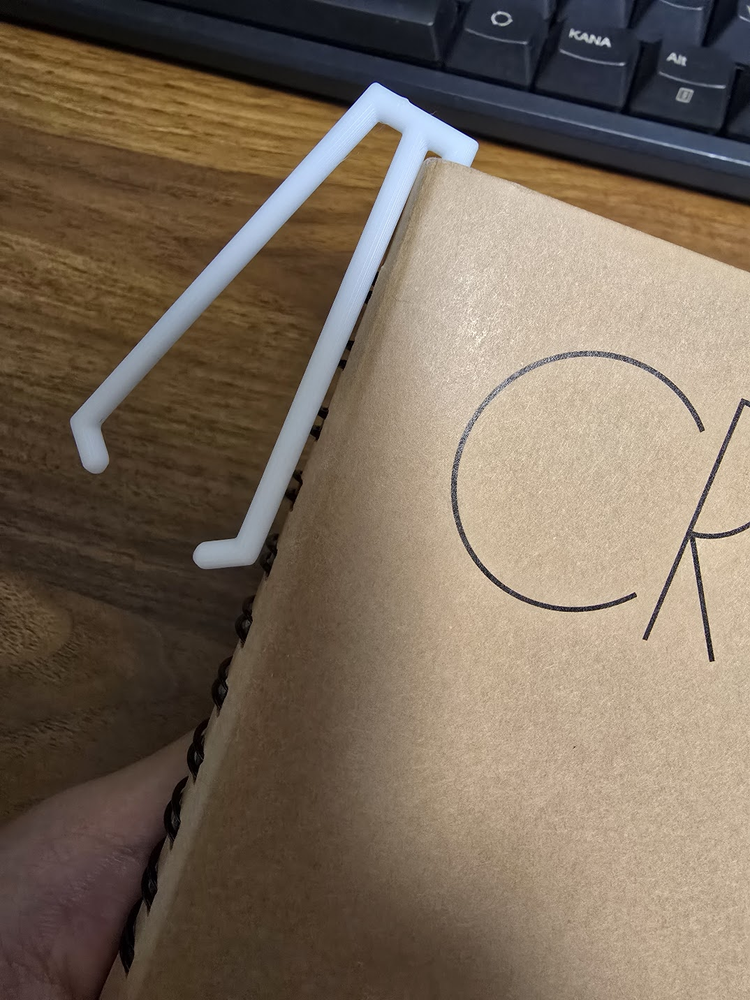
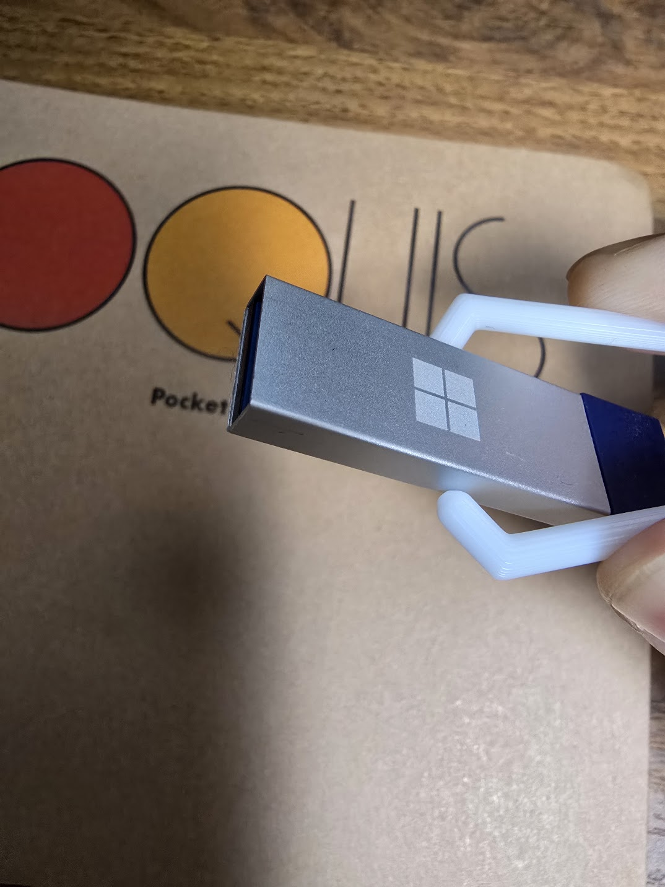

・構想段階のスケッチ
自分の納得いくようなデザインがあまり思い浮かばなかった為、今回は”実用性”に全振りしてデザインしてみた。

・試作品と完成品
試作品ではピンセットとして機能するか調べる為、ただのピンセットを作ってみた。
右が試作品、左が完成品。

stlファイル
・作品の説明
クリップ機能付きのピンセット。
約50mm✖️約3mm✖️約20mm
・この作品を作ったわけ
前述したように、自分の納得できるようなデザインが思い浮かばなかったため、機能性に重点を置きデザインを考えていた。
構想を練っていくうちに、ピンセットにクリップがあれば持ち運びの際により楽になるのでは...と言う考えに至りこの作品を作成した。
・使用例


・参考サイト
Fusion参考資料1
Fusion参考資料2